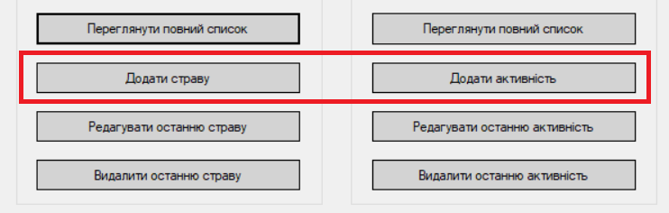
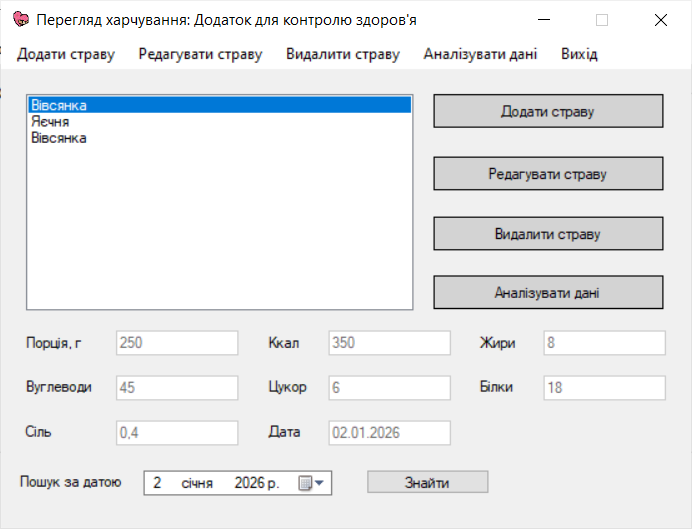
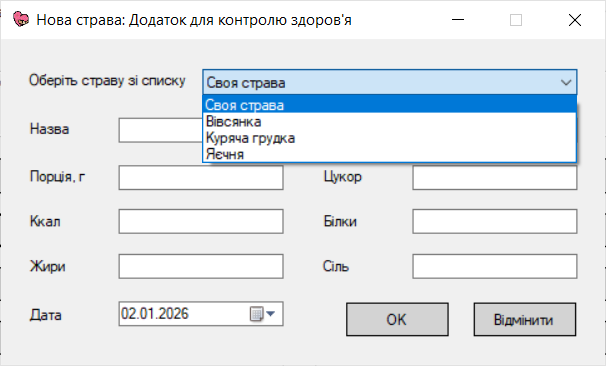
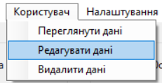

Для запису даних необхідно обрати на головному меню категорію ("харчування" або "активність") та натиснути на кнопку "Додати" або перейти на вікно перегляду даних за категорією і натиснути на кнопку "Додати", заповнити поля та зберегти.



Якщо потрібно редагувати тільки останній запис, то можна скористатись такою опцією на головному меню. Якщо ні, то потрібно перейти на вікно перегляду даних за категорією та обрати відповідну опцію.
Для видалення даних, в меню "Користувач" необхідно обрати "Видалити дані". Також дані можливо видалити з вікна авторизації.

Є можливість пошуку даних за датою.